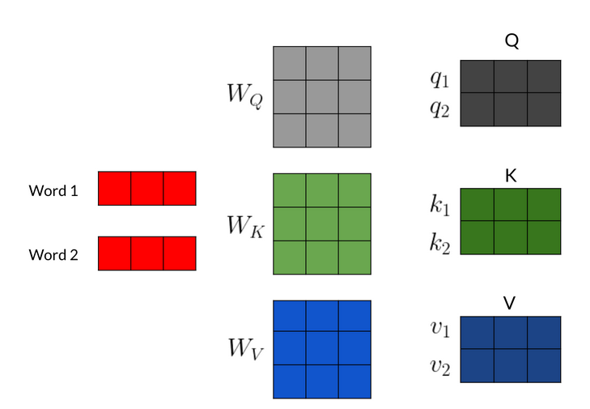
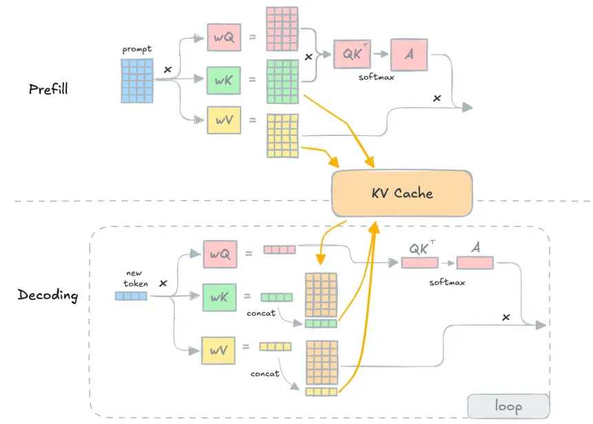
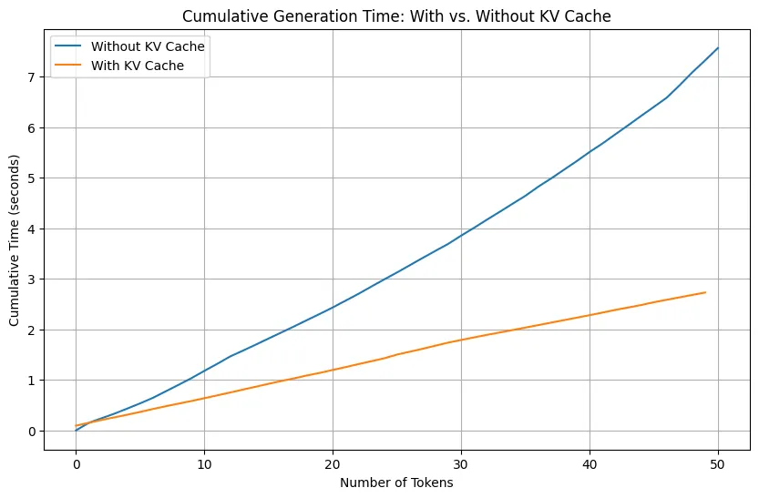
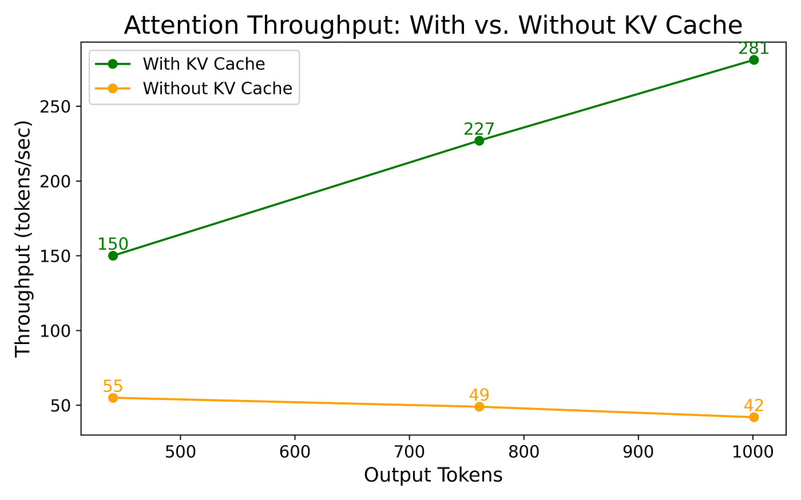
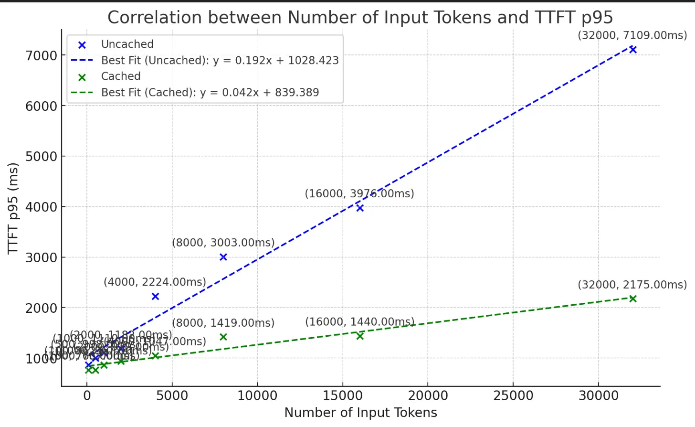
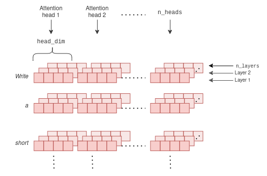
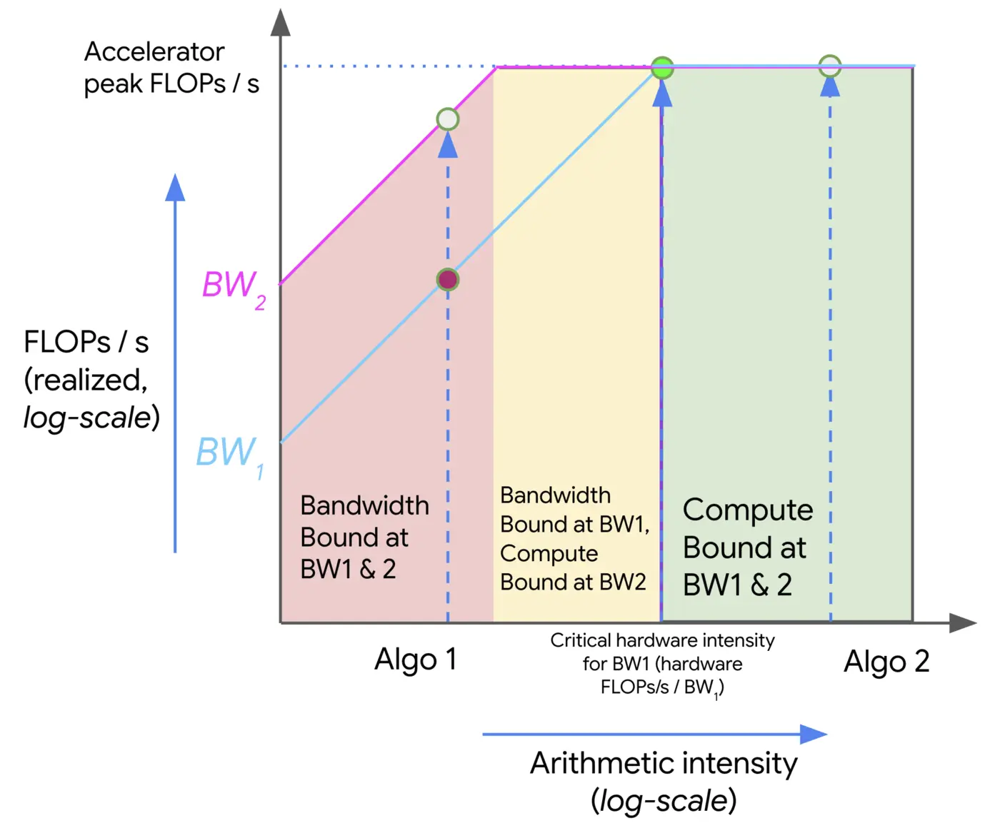

Almost all the FLOPs are matrix multiplies (GEMMs). The weights for every GEMM live in HBM (the GPU’s main memory) and must be streamed onto the chip on every forward pass.
\(Q, K, V\): Query, Key, and Value matrices derived from input embeddings
\(d_k\): The dimensionality of the keys (and queries)
\(W^O\): Output projection matrix that combines the outputs of all heads into a single vector.
\(h\): The number of parallel attention heads.

KV Cache - Illustration

Step
Tokens in cache
Per-layer cache
Prefill (S=5)
t1 … t5
\(5 \times K \times H\) (×2: K and V)
Decode step 1
t1 … t6
append 1 row
Decode step 2
t1 … t7
append 1 row
Note
The cache grows linearly with sequence length: long context is expensive in memory even though each new token is cheap in compute. This single fact motivates every attention variant that follows.
MHA - Generation Phase
Generation Phase (Autoregressive Decoding):
Generate tokens one at a time autoregressively
At each step, compute attention over all previously generated tokens
Keys and Values for past tokens remain unchanged
Only the new token’s Query needs to attend to all previous Keys/Values
MHA - Generation Phase
Problem: Without caching, we recompute K and V for all previous tokens at every step!
Step 1: Compute K, V for token 1
Step 2: Recompute K, V for tokens 1, 2
Step 3: Recompute K, V for tokens 1, 2, 3
…
Step N: Recompute K, V for all N tokens → O(N²) redundant computation
Solution: KV Cache — Store computed K and V vectors and reuse them
KV Cache
Reduced per-token compute from O(N) to O(1) by caching K and V for all past tokens
Reduced TTFT, increased throughput



KV Cache Memory

KV Cache size needed for MHA:
DeepSeek V3 MHA baseline (hypothetical, before MLA):
AI tells you whether the model is spending time computing (doing math) or fetching (moving data).
Low AI = GPU mostly waiting for data.
High AI = GPU mostly doing useful computation.
Tip
Intuition : “Imagine you’re a cook. The fridge (HBM) is in the next room. Arithmetic intensity is how many dishes you can prepare per trip to the fridge.
If AI=1, you grab one ingredient, cook one dish, walk back. Terrible.
If AI=100, you grab one ingredient and cook 100 dishes. Great!”
Arithmetic Intensity
Setup: Matrix multiply in a linear layer : \(Y = X \cdot W\)
B : batch size, D : hidden dimension, F : feedforward dimension
\(X\): B \(\times\) D, \(W\): D \(\times\) F
FLOPs =\(2 \cdot B \cdot D \cdot F\)
Bytes transferred:
Read X: \(B \cdot D \cdot 2\)
Read W: \(D \cdot F \cdot 2\)
Write Y: \(B \cdot F \cdot 2\)
Total Bytes =\(2(BD + DF + BF)\)
\[\text{AI} = \frac{2 \cdot B \cdot D \cdot F}{2(BD + DF + BF)}\]
Arithmetic intensity\(\approx\) batch size (when B is small relative to model dimensions)
Arithmetic Intensity
Batch Size = 1 (single-stream decode)
\[ \text{AI} = \frac{2 \cdot D \cdot F}{2 \cdot D \cdot F + 2 \cdot D + 2 \cdot F} \approx 1 \text{ FLOP/byte}\]
You read the entire weight matrix (\(D \times F\))…
…but only do one row’s worth of compute
For A100 GPU (Capacity : 150-200 FLOPs/byte):
AI \(\approx\) 1 \(\ll\) 150-200
Peak-compute upper bound: < 1% of peak FLOPs
The GPU is basically spending all its time waiting for data to arrive from memory, not doing math.
The Roofline Model
Performance is bounded by:
Compute : how fast GPU does math (FLOPs/s)
Bandwidth : how fast data moves (GB/s)
Capacity : whether weights + KV cache fit at all (GB)
Note
Knee point = bandwidth-bound to compute-bound transisiton -> minimum AI needed to fully utilize GPU’s compute.

Figure: an example roofline plot showing two algorithms with different arithmetic intensities (Algo 1 and Algo 2) and their corresponding theoretical peak throughput under different bandwidths (BW1 and BW2). In the red area, an algorithm is bandwidth bound at both bandwidths and is wasting some fraction of the hardware’s peak FLOPs/s. The yellow area is bandwidth-bound only at the lower bandwidth (BW1). The green area is compute-bound at all bandwidths.
\[\text{AI}_{\text{MLP}} = \frac{6BTDF}{4BTD + 6DF + 4BTF} \approx B \cdot T \quad \text{(when } BT \ll D, F\text{)}\]
Important
Increase batch size (B) and sequence length (T) to increase AI and move from memory-bound to compute-bound regime for MLP layers.
MLP AI: Prefill vs Decode
Prefill (T = S)
\[\text{AI}_{\text{MLP}} \approx B \cdot S\]
Compute-bound
S = 1024, B = 1 : AI ≈ 1024
Well above knee point (~200)
Decode (T = 1)
\[\text{AI}_{\text{MLP}} \approx B\]
Memory-bound (BAD)
B = 1 => AI ≈ 1, B = 32 => AI ≈ 32
Far below knee point
Important
During decode, ALL model weights are read from HBM for every single output token, but only do one token’s worth of matmuls. GPU utilization: 1-5% of peak FLOPs.